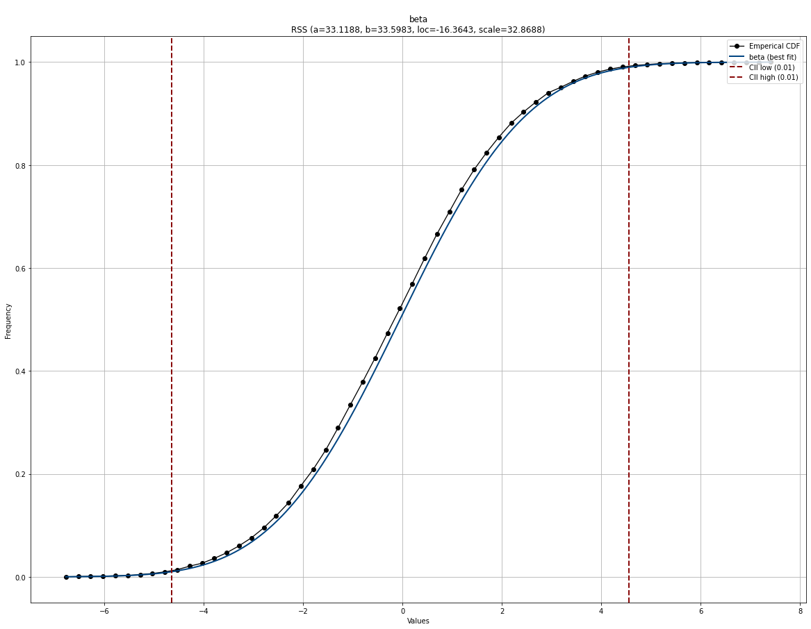
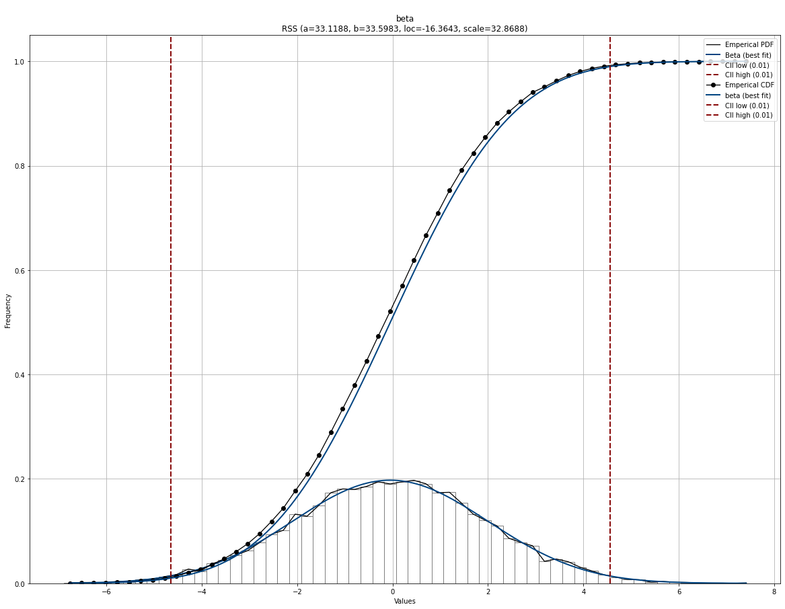
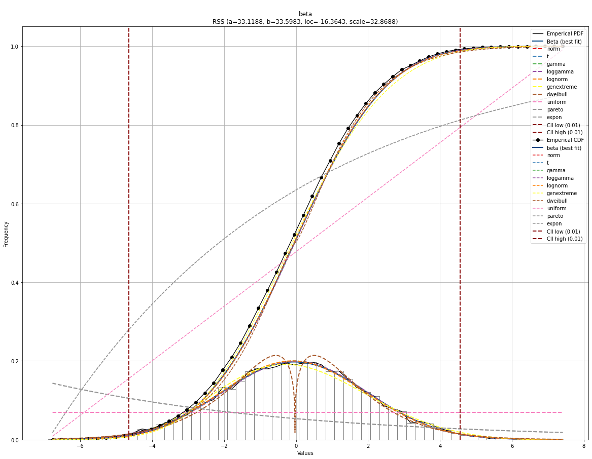
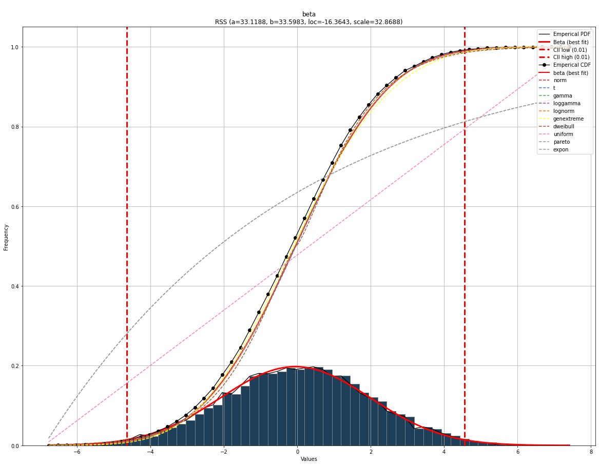
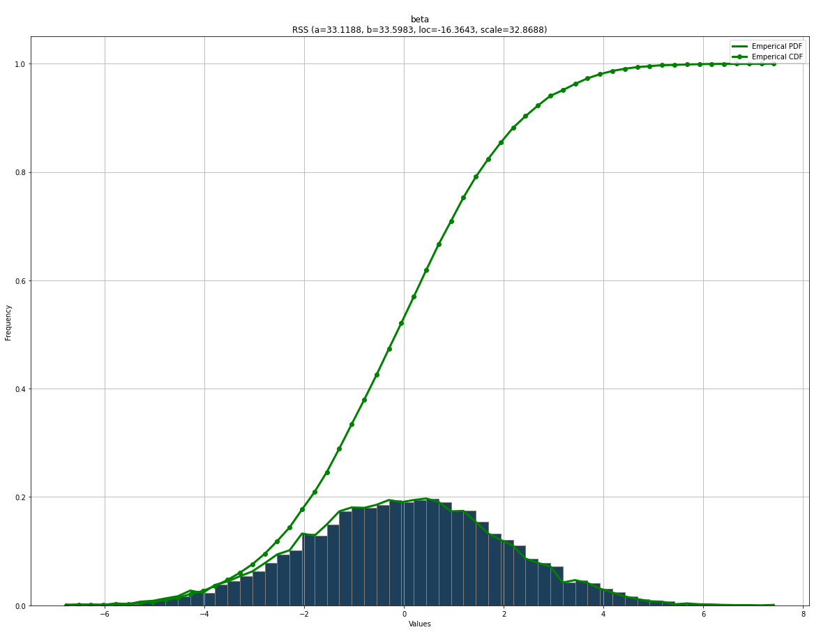

Basic plot
Let’s start plotting the empirical data using a histogram and the PDF. These plots will help to visually guide whether a distribution is a good model for a dataset. The confidence intervals are automatically set to 95% CII but can be changed using the alpha parameter during initialization. When using the plot functionality, it automatically shows the histogram in bars and with a line, PDF/CDF, and confidence intervals. All these properties can be manually specified or removed.
We will start generating random data from the normal distribution and create a basic PDF and CDF plot.
# Import
from distfit import distfit
import numpy as np
# Create dataset
X = np.random.normal(0, 2, 10000)
y = [-8,-6,0,1,2,3,4,5,6]
# Initialize
dfit = distfit(alpha=0.01)
# Fit
dfit.fit_transform(X)
# Plot seperately
fig, ax = dfit.plot(chart='pdf')
fig, ax = dfit.plot(chart='cdf')
|
 |

Plot all fitted distributions
# Plot seperately
fig, ax = dfit.plot(chart='pdf', n_top=11)
fig, ax = dfit.plot(chart='cdf', n_top=11)
|
|


Combine plots
# Plot together
fig, ax = dfit.plot(chart='pdf')
fig, ax = dfit.plot(chart='cdf', ax=ax)
# Plot together
fig, ax = dfit.plot(chart='pdf', n_top=11)
fig, ax = dfit.plot(chart='cdf', n_top=11, ax=ax)
 |
 |
Change chart properties
# Change or remove properties of the chart.
dfit.plot(chart='pdf',
pdf_properties={'color': 'r'},
cii_properties={'color': 'g'},
emp_properties=None,
bar_properties=None)
dfit.plot(chart='cdf',
pdf_properties={'color': 'r'},
cii_properties={'color': 'g'},
emp_properties=None)
# Combine the charts and change properties
fig, ax = dfit.plot(chart='pdf',
pdf_properties={'color': 'r', 'linewidth': 3},
cii_properties={'color': 'r', 'linewidth': 3},
bar_properties={'color': '#1e3f5a'})
# Give the previous axes as input.
dfit.plot(chart='cdf',
n_top=10,
pdf_properties={'color': 'r'},
cii_properties=None,
ax=ax)
# Combine the charts and change properties
fig, ax = dfit.plot(chart='pdf',
pdf_properties=None,
cii_properties=None,
emp_properties={'color': 'g', 'linewidth': 3},
bar_properties={'color': '#1e3f5a'})
# Give the previous axes as input.
dfit.plot(chart='cdf',
pdf_properties=None,
cii_properties=None,
emp_properties={'color': 'g', 'linewidth': 3},
ax=ax)
|
|
 |
 |


QQ plot
# Plot seperately
fig, ax = dfit.qqplot(X)
fig, ax = dfit.qqplot(X, n_top=11)
|
|


Line plots
# Line plot
# Import
from distfit import distfit
# Initialize
dfit = distfit(smooth=3, bound='up')
# Import
df = dfit.import_example(data='tips')
# Make line plot without any fitting
dfit.lineplot(df['tip'], xlabel='Number', ylabel='Tip value', grid=True, line_properties={'marker':'.'})
# Fit
dfit.fit_transform(df['tip'])
# Create line plot but now with the distribution
dfit.lineplot(df['tip'], xlabel='Number', ylabel='Tip value', grid=True, line_properties={'marker':'.'}, projection=True)
|
|